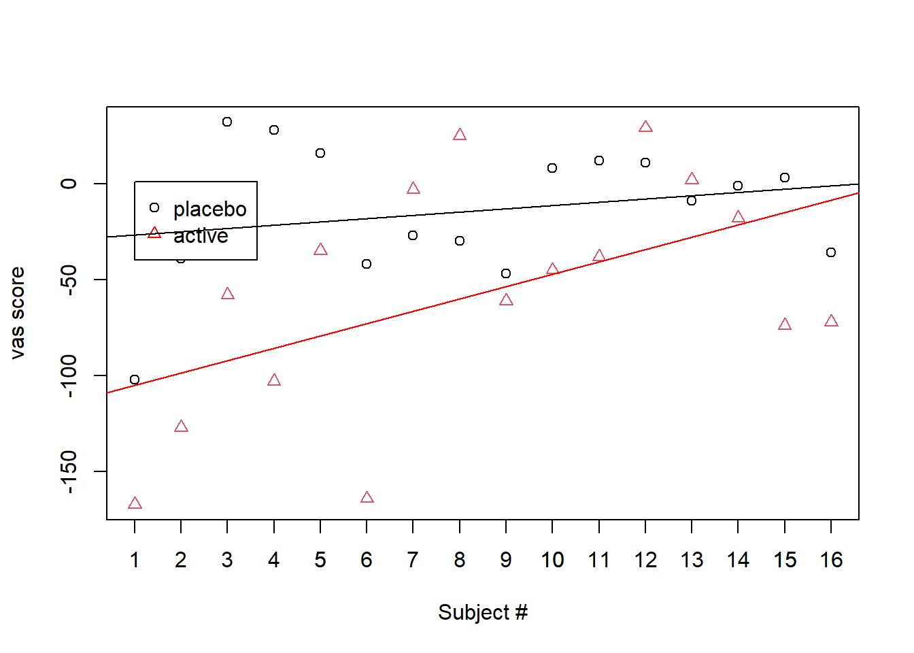

# Question A.
# Set up an additive model for the ashina data, as part of ISwR package
library(ISwR)
data("ashina")
attach(ashina)
# This data contain additive effects on subjects, period and treatment.
# Compare the results with those obtained from t tests.
head(ashina,5) vas.active vas.plac grp
1 -167 -102 1
2 -127 -39 1
3 -58 32 1
4 -103 28 1
5 -35 16 1# Create a new 'ashina$subject' column as a factor w/ values 1-16
ashina$subject<-factor(1:16)
head(ashina,5) vas.active vas.plac grp subject
1 -167 -102 1 1
2 -127 -39 1 2
3 -58 32 1 3
4 -103 28 1 4
5 -35 16 1 5summary(ashina) vas.active vas.plac grp subject
Min. :-167.00 Min. :-102.00 Min. :1.000 1 : 1
1st Qu.: -81.25 1st Qu.: -36.75 1st Qu.:1.000 2 : 1
Median : -51.50 Median : -5.00 Median :1.000 3 : 1
Mean : -56.81 Mean : -13.94 Mean :1.375 4 : 1
3rd Qu.: -14.25 3rd Qu.: 11.25 3rd Qu.:2.000 5 : 1
Max. : 29.00 Max. : 32.00 Max. :2.000 6 : 1
(Other):10 # Create two data frames:
# 'act' Given active substance & 'plac' given Placebo
# Include a 'vas' column for the 'vas' summary score value,
# a 'subject' column for the factored numeric subject count,
# a 'treat' column (1 for 'active' & 0 for 'placebo')
# to distinguish between treatment in binary format,
# and a 'period' column to identify the group number from 'ashina$grp'
# where '1' got placebo first & '2' got active first.
attach(ashina)
act<-data.frame(vas=vas.active,subject,treat=1,period=grp)
plac<-data.frame(vas=vas.plac,subject,treat=0,period=grp)
# In order to fit an additive model, the 'act' & 'plac' data.frames must be
# combined together using the rbind() function and the binary values
# converted to factors as well as the subject count.
combinedData<-rbind(act,plac)
combinedData$treat<-factor(combinedData$treat,
labels=c("placebo","active"))
combinedData$period<-factor(combinedData$period,
labels=c("placFirst","actFirst"))
summary(combinedData) vas subject treat period
Min. :-167.00 1 : 2 placebo:16 placFirst:20
1st Qu.: -58.75 2 : 2 active :16 actFirst :12
Median : -32.50 3 : 2
Mean : -35.38 4 : 2
3rd Qu.: 4.25 5 : 2
Max. : 32.00 6 : 2
(Other):20 # Now the data frame can be modeled to compare the predictor variables
# to the response variable to see if there is a significant statistical
# difference to 'var' values from the additive effects of:
# 'subject'+'treat' to see if the placebo or active treatments
# had a significant effect on vas scores among the 16 subjects.
# Plot the result
attach(combinedData)
plot(as.numeric(subject),vas,pch=as.numeric(treat),
xlab="Subject #", ylab="vas score",col=treat)
legend(x=1,legend=c("placebo","active"),
col=c("black","red"),pch=1:2)
axis(1, at = c(1:16))
# Specify regression line data
vas.placebo<-combinedData[treat=="placebo",]
vas.active<-combinedData[treat=="active",]
# Fit GLM models for effects of treatment on vas scores by subject
glm.placebo<-glm(vas~as.numeric(subject),data=vas.placebo)
glm.active<-glm(vas~as.numeric(subject),data=vas.active)
abline(glm.placebo,col="black")
abline(glm.active,col="red")
# Regression analysis
summary(glm.placebo)
Call:
glm(formula = vas ~ as.numeric(subject), data = vas.placebo)
Coefficients:
Estimate Std. Error t value Pr(>|t|)
(Intercept) -28.475 18.383 -1.549 0.144
as.numeric(subject) 1.710 1.901 0.900 0.384
(Dispersion parameter for gaussian family taken to be 1228.886)
Null deviance: 18199 on 15 degrees of freedom
Residual deviance: 17204 on 14 degrees of freedom
AIC: 163.09
Number of Fisher Scoring iterations: 2# The results show that with a t-value of 0.900 and a
# p-value of 0.384, the placebo treatment did not have a significant
# enough effect on vas scores among the 16 subjects to reject the null.
summary(glm.active)
Call:
glm(formula = vas ~ as.numeric(subject), data = vas.active)
Coefficients:
Estimate Std. Error t value Pr(>|t|)
(Intercept) -111.375 28.070 -3.968 0.0014 **
as.numeric(subject) 6.419 2.903 2.211 0.0442 *
---
Signif. codes: 0 '***' 0.001 '**' 0.01 '*' 0.05 '.' 0.1 ' ' 1
(Dispersion parameter for gaussian family taken to be 2865.194)
Null deviance: 54122 on 15 degrees of freedom
Residual deviance: 40113 on 14 degrees of freedom
AIC: 176.64
Number of Fisher Scoring iterations: 2# The results show that with a t-value of 2.211 and a
# p-value of 0.0442, the active treatment had a significant
# effect on vas scores among the 16 subjects. We can reject the null.
# Create 'logit' function for logistic regression
logit <- function(p) log(p/(1-p))
# GLM Model to determine if 'vas, subject, or period' predictor variables
# increases or decreases the odds of the outcome 'treat' group
model <- glm(treat ~ .,family = binomial(logit), data=combinedData)
summary(model)
Call:
glm(formula = treat ~ ., family = binomial(logit), data = combinedData)
Coefficients: (1 not defined because of singularities)
Estimate Std. Error z value Pr(>|z|)
(Intercept) -8.08937 3.50126 -2.310 0.02087 *
vas -0.06014 0.02057 -2.923 0.00346 **
subject2 3.09742 3.71629 0.833 0.40458
subject3 7.30749 4.40133 1.660 0.09686 .
subject4 5.83397 5.94041 0.982 0.32606
subject5 7.51800 3.82633 1.965 0.04944 *
subject6 1.89454 5.06324 0.374 0.70827
subject7 7.18721 3.59417 2.000 0.04553 *
subject8 7.93901 3.96059 2.005 0.04502 *
subject9 4.84159 3.07156 1.576 0.11497
subject10 6.97670 3.72291 1.874 0.06093 .
subject11 7.30749 3.76965 1.939 0.05256 .
subject12 9.29225 4.10554 2.263 0.02361 *
subject13 7.87886 3.73104 2.112 0.03471 *
subject14 7.51800 3.65361 2.058 0.03962 *
subject15 5.95426 3.85548 1.544 0.12250
subject16 4.84159 3.16071 1.532 0.12557
periodactFirst NA NA NA NA
---
Signif. codes: 0 '***' 0.001 '**' 0.01 '*' 0.05 '.' 0.1 ' ' 1
(Dispersion parameter for binomial family taken to be 1)
Null deviance: 44.361 on 31 degrees of freedom
Residual deviance: 28.281 on 15 degrees of freedom
AIC: 62.281
Number of Fisher Scoring iterations: 5# Use AIC to fit model selection
model2 <- step(model,data=combinedData)Start: AIC=62.28
treat ~ vas + subject + period
Step: AIC=62.28
treat ~ vas + subject
Df Deviance AIC
- subject 15 38.342 42.342
<none> 28.281 62.281
- vas 1 44.361 76.361
Step: AIC=42.34
treat ~ vas
Df Deviance AIC
<none> 38.342 42.342
- vas 1 44.361 46.361summary(model2)
Call:
glm(formula = treat ~ vas, family = binomial(logit), data = combinedData)
Coefficients:
Estimate Std. Error z value Pr(>|z|)
(Intercept) -0.639381 0.471332 -1.357 0.1749
vas -0.019715 0.009389 -2.100 0.0357 *
---
Signif. codes: 0 '***' 0.001 '**' 0.01 '*' 0.05 '.' 0.1 ' ' 1
(Dispersion parameter for binomial family taken to be 1)
Null deviance: 44.361 on 31 degrees of freedom
Residual deviance: 38.342 on 30 degrees of freedom
AIC: 42.342
Number of Fisher Scoring iterations: 4# The results show that the estimates (log odds) -0.019715 are negative for 'vas'
# A negative log-odds ratio means that the odds go down with an
# increase in the value of the predictor variable.
# Therefore the odds of determining a treatment group 'treat' decreases
# with observed/summarized 'vas' score increases.
# A Z-value of -2.100 and a p value of 0.0357, suggest that we can reject
# the null, and that 'vas' has a significant effect on 'treat'.
# Perform t test
tTest1<-t.test(vas~treat,data=combinedData)
tTest1
Welch Two Sample t-test
data: vas by treat
t = 2.4699, df = 24.063, p-value = 0.02099
alternative hypothesis: true difference in means between group placebo and group active is not equal to 0
95 percent confidence interval:
7.052494 78.697506
sample estimates:
mean in group placebo mean in group active
-13.9375 -56.8125 # When testing to determine if 'treat' affects 'vas'
# The t test results state that the t-statistic is 2.4699
# with 24.063 degrees of freedom. Because the p-value 0.02099 is less than
# alpha 0.05 the null hypothesis would be rejected.This concludes that both
# treatments have a significant effect on the 'vas' scores with the active
# treatment group showing lower mean 'vas' score compared to the placebo group.
# The p-value is similar to the p-value from the model summary which
# indicated that 'treat' was statistically significant.
#---------------------------------------------------------------------------#
# Question B
# Consider the following
a<-gl(2,2,8) # Creates factor with 2 levels,each repeated 2 times,length 8
b<-gl(2,4,8) # Creates factor with 2 levels,each repeated 4 times,length 8
x<-1:8
y<-c(1:4,8:5)
z<-rnorm(8)
# Instruction: The rnorm() is a built-in R function that generates a vector
# of normally distributed random numbers. The rnorm() method takes a sample
# size as input and generates that many random numbers. We are looking for
# two models: (1) model.matrix (z~a:b); (2) lm (z~a:b)
# B1. Your assignment is to generate the model matrices for the following models
# z ~ a*b # Model with interaction (a*b)
mm1<-model.matrix(z~a*b)
mm1 (Intercept) a2 b2 a2:b2
1 1 0 0 0
2 1 0 0 0
3 1 1 0 0
4 1 1 0 0
5 1 0 1 0
6 1 0 1 0
7 1 1 1 1
8 1 1 1 1
attr(,"assign")
[1] 0 1 2 3
attr(,"contrasts")
attr(,"contrasts")$a
[1] "contr.treatment"
attr(,"contrasts")$b
[1] "contr.treatment"fmm1<-lm(z~a*b)
summary(fmm1)
Call:
lm(formula = z ~ a * b)
Residuals:
1 2 3 4 5 6 7 8
-0.7144 0.7144 0.3018 -0.3018 1.1274 -1.1274 -0.5936 0.5936
Coefficients:
Estimate Std. Error t value Pr(>|t|)
(Intercept) 0.2105 0.7458 0.282 0.792
a2 0.1442 1.0547 0.137 0.898
b2 -0.5802 1.0547 -0.550 0.612
a2:b2 0.9295 1.4916 0.623 0.567
Residual standard error: 1.055 on 4 degrees of freedom
Multiple R-squared: 0.2124, Adjusted R-squared: -0.3783
F-statistic: 0.3596 on 3 and 4 DF, p-value: 0.7864# z ~ a:b # Model with only interaction term (a:b)
mm2<-model.matrix(z~a:b)
mm2 (Intercept) a1:b1 a2:b1 a1:b2 a2:b2
1 1 1 0 0 0
2 1 1 0 0 0
3 1 0 1 0 0
4 1 0 1 0 0
5 1 0 0 1 0
6 1 0 0 1 0
7 1 0 0 0 1
8 1 0 0 0 1
attr(,"assign")
[1] 0 1 1 1 1
attr(,"contrasts")
attr(,"contrasts")$a
[1] "contr.treatment"
attr(,"contrasts")$b
[1] "contr.treatment"fmm2<-lm(z~a:b)
summary(fmm2)
Call:
lm(formula = z ~ a:b)
Residuals:
1 2 3 4 5 6 7 8
-0.7144 0.7144 0.3018 -0.3018 1.1274 -1.1274 -0.5936 0.5936
Coefficients: (1 not defined because of singularities)
Estimate Std. Error t value Pr(>|t|)
(Intercept) 0.7039 0.7458 0.944 0.399
a1:b1 -0.4934 1.0547 -0.468 0.664
a2:b1 -0.3493 1.0547 -0.331 0.757
a1:b2 -1.0736 1.0547 -1.018 0.366
a2:b2 NA NA NA NA
Residual standard error: 1.055 on 4 degrees of freedom
Multiple R-squared: 0.2124, Adjusted R-squared: -0.3783
F-statistic: 0.3596 on 3 and 4 DF, p-value: 0.7864# B2. Please also discuss the implications of using these two models;
# please be reminded about the model fits and notice
# which models contain singularities.
# Interaction Model Matrix
mm1 (Intercept) a2 b2 a2:b2
1 1 0 0 0
2 1 0 0 0
3 1 1 0 0
4 1 1 0 0
5 1 0 1 0
6 1 0 1 0
7 1 1 1 1
8 1 1 1 1
attr(,"assign")
[1] 0 1 2 3
attr(,"contrasts")
attr(,"contrasts")$a
[1] "contr.treatment"
attr(,"contrasts")$b
[1] "contr.treatment"# This design matrix will include columns for the main effects of a and b,
# as well as their interaction term (a:b).
# Interaction-term-Only Model Matrix
mm2 (Intercept) a1:b1 a2:b1 a1:b2 a2:b2
1 1 1 0 0 0
2 1 1 0 0 0
3 1 0 1 0 0
4 1 0 1 0 0
5 1 0 0 1 0
6 1 0 0 1 0
7 1 0 0 0 1
8 1 0 0 0 1
attr(,"assign")
[1] 0 1 1 1 1
attr(,"contrasts")
attr(,"contrasts")$a
[1] "contr.treatment"
attr(,"contrasts")$b
[1] "contr.treatment"# This design matrix will only include the interaction term (a:b),
# without main effects.
# Interaction Model Fit
summary(fmm1)
Call:
lm(formula = z ~ a * b)
Residuals:
1 2 3 4 5 6 7 8
-0.7144 0.7144 0.3018 -0.3018 1.1274 -1.1274 -0.5936 0.5936
Coefficients:
Estimate Std. Error t value Pr(>|t|)
(Intercept) 0.2105 0.7458 0.282 0.792
a2 0.1442 1.0547 0.137 0.898
b2 -0.5802 1.0547 -0.550 0.612
a2:b2 0.9295 1.4916 0.623 0.567
Residual standard error: 1.055 on 4 degrees of freedom
Multiple R-squared: 0.2124, Adjusted R-squared: -0.3783
F-statistic: 0.3596 on 3 and 4 DF, p-value: 0.7864# This model will estimate the effects of a, b,
# and their interaction on the response variable z
# Interaction-term-Only Model Fit
summary(fmm2)
Call:
lm(formula = z ~ a:b)
Residuals:
1 2 3 4 5 6 7 8
-0.7144 0.7144 0.3018 -0.3018 1.1274 -1.1274 -0.5936 0.5936
Coefficients: (1 not defined because of singularities)
Estimate Std. Error t value Pr(>|t|)
(Intercept) 0.7039 0.7458 0.944 0.399
a1:b1 -0.4934 1.0547 -0.468 0.664
a2:b1 -0.3493 1.0547 -0.331 0.757
a1:b2 -1.0736 1.0547 -1.018 0.366
a2:b2 NA NA NA NA
Residual standard error: 1.055 on 4 degrees of freedom
Multiple R-squared: 0.2124, Adjusted R-squared: -0.3783
F-statistic: 0.3596 on 3 and 4 DF, p-value: 0.7864# This model will estimate the effect of the interaction term a:b on z,
# assuming no separate effects for a or b.
# A singularity occurs here, probably because the main effects of a and b
# are highly correlated with the interaction term, and it doesn't account
# for the separate effects.
# Both models have the same R-squared value, indicating similar
# explanatory power. However, the significance levels of the coefficients
# differ between the two models. In the interaction model, you can assess
# the significance of the main effects and the interaction term separately.
# In the interaction-term-only model, you can only assess the significance of
# the interaction term.